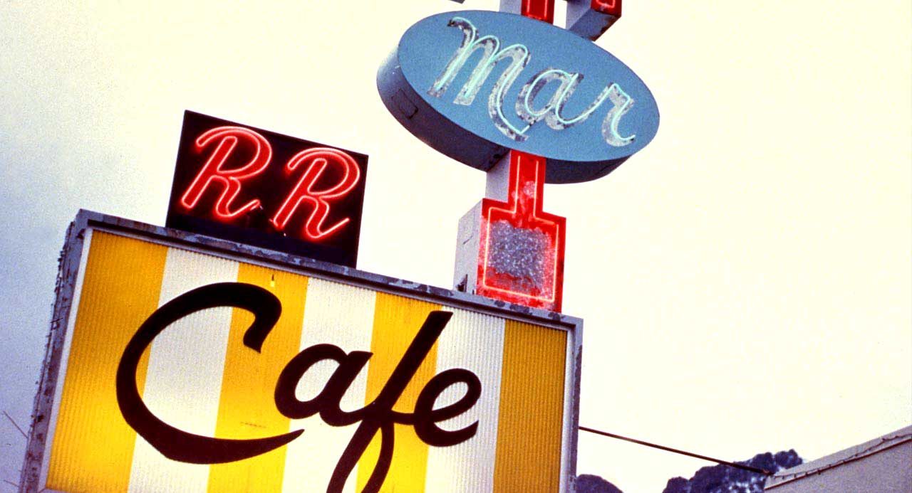

Restaurant Description
The Double R Diner (for Railroad Diner) is the local diner
in the town of Twin Peaks, Washington. It is owned and operated by
Norma Jennings. It is a town institution and oftentimes a hang-out,
specializing in homemade pie and coffee. It is open all days of the
week and holidays. It is also a food provider for the town Meals on
Wheels program and is a sponsor of the Miss Twin Peaks Contest.
137 W North Bend Way, Twin Peaks, WA, 98045
(555) 555 - 5511